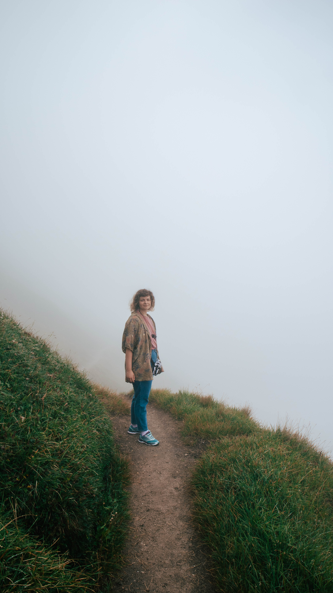

who
am i

My name is Helga. With a passion for games, coding and UI/UX design, I strive to create things that bring even the slightest positive change to the word. That was the reason I chose the serious games specialization at my postgraduate education, as I have this urge of bringing some light into people’s lives, for which, I think serious games are an amazing way to do so. Moreover, I like to just create random things that I, or others enjoy.
My initial interest was only into programming, mostly web development, but during the years at university, I can say that my field of interest has broadened with a passion for game development, UI and UX design. I believe that there is a way of combining all of my interest and just using them to create something amazing out of the knowledge I have cultivated during the years. I still have a long way to go, when it comes to learning, as IMO there is always something new to learn, but I happily face all the “challenges” and new things when it comes to that, knowing that I am becoming a better person and a better worker in the field.
As for my design and creations, I would like them to be and feel authentic, to work with things that feel close to me. I really care about my surroundings, people, animals, the planet itself, so my main driving force, as said earlier, is really doing something good and meaningful. Something that can help people in any way possible. That helps them with their problems, educates them, or just makes them relax, or to even fight for a bigger purpose.
Nature and travelling are a true driving force for me, they give my mind peace and clarity, and open new doors for ideas. I think I am the most creative when I go for walks/hikes in nature or when I walk in a city in a more mindful way, when I observe things from another perspective. I think design should be simple and smooth, sprinkled with some personality and playfulness.
One thing for sure, I am a maximalist, in a way, that I strive to deliver good quality product, something that I am really proud of. I like to work both individually and in teams, depends on the task. Sometimes I feel like I am more productive when alone, but when it comes to creating something new, then working in a team is definitely better, as the ideation is much more interesting and wide, moreover, feedbacks help improve as well. All my experience so far, mostly comes from university projects, mixed with some hobby projects but the plan is to have this list growing.
HU
EN
RO
NO
SE
GE
- game design
- serious games
- unity
- c#
- java
- research
- online presence
- intro to UX
- design & creativity
- adobe xd
- figma
- building & testing prototypes